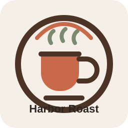

Balanced espresso and a rotating slow bar.
Classic drinks stay consistent, while single-origin pours keep the menu fresh.

Harbor RoastNeighborhood coffee shop • Portland, Maine
Harbor Roast is a neighborhood coffee shop built around careful espresso, seasonal drinks, and a room that invites people to stay a little longer.
About Harbor Roast
We serve balanced espresso, rotating single-origin coffees, and a focused menu of pastries and toasts. The space should feel warm, calm, and easy to return to every day.
Morning commuters can grab a quick drink on the way in, while weekend visitors and remote workers can settle in with pastries, ceramic cups, and a little extra time.
Why People Return
Classic drinks stay consistent, while single-origin pours keep the menu fresh.
The cafe is designed to feel welcoming at 7 AM and easy to stay in past noon.
Fresh bakery staples and light food options keep the experience simple and complete.
Visit the Cafe
Mon-Fri: 6:30 AM - 5:00 PM
Sat-Sun: 7:00 AM - 6:00 PM
@harborroast